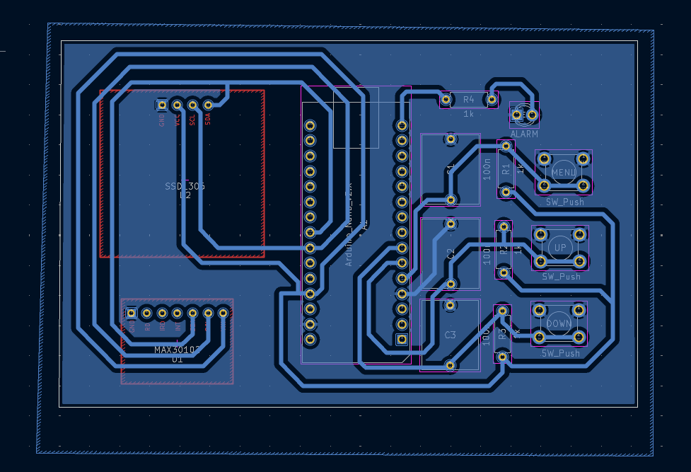

Wearable Pulse & SpO2 Monitor
Description:
A wearable health monitoring device that measures heart rate and blood oxygen (SpO2) levels using the MAX30100 sensor, and displays the data in real-time on an OLED screen. Entire system is built on a custom PCB using Arduino Nano and designed in KiCad.
Technologies Used:
- Arduino Nano (ATmega328P)
- MAX30100 Pulse Oximeter Sensor (I2C)
- OLED 0.96" SSD1306 Display (I2C)
- KiCad – 1-layer PCB design
- Arduino IDE – C++
- 4 Push Buttons, 2 LEDs, Power via USB
Key Contributions:
- Designed complete schematic and PCB layout
- Wrote embedded firmware for data collection and OLED display
- Debugged I2C communication and sensor signal stability
- Integrated user interface with buttons and LED indicators
Results:
- Stable SpO2 and pulse rate readings displayed in real time
- Compact, fully soldered PCB – wearable-ready
- Functional demo and documentation ready for testing and presentation
Design in Kicad:
final product:
Video: